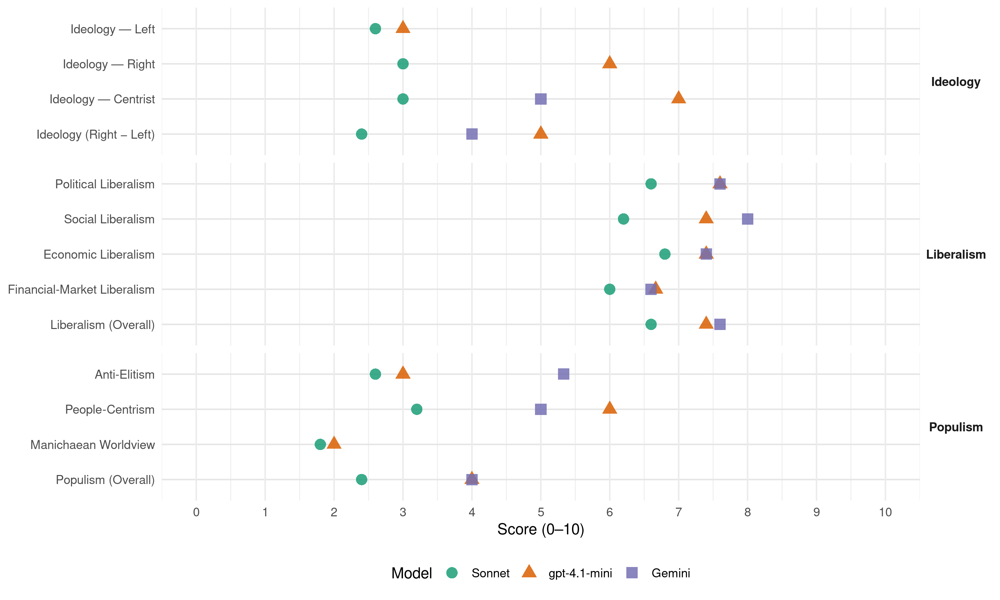

HDZ (Croatia, 2016)
manifesto_id 81711_201609
Get full text: This site shows derived annotations and short verbatim quotes only. The full manifesto text is © Manifesto Project / WZB — obtain it via manifesto-project.wzb.eu using the manifesto_id above.
Headline scores
| Dimension | Sonnet | gpt-4.1-mini | Gemini |
|---|---|---|---|
| Populism (Overall) | 2.4 | 4.0 | 4.0 |
| Anti-Elitism | 2.6 | 3.0 | 5.3 |
| People-Centrism | 3.2 | 6.0 | 5.0 |
| Manichaean Worldview | 1.8 | 2.0 | – |
| Ideology (Right − Left) | 2.4 | 5.0 | 4.0 |
| Liberalism (Overall) | 6.6 | 7.4 | 7.6 |
| Political Liberalism | 6.6 | 7.6 | 7.6 |
| Social Liberalism | 6.2 | 7.4 | 8.0 |
| Economic Liberalism | 6.8 | 7.4 | 7.4 |
| Financial-Market Liberalism | 6.0 | 6.7 | 6.6 |
Evidence per dimension
Economic Liberalism
Gemini · score 8.0 · verified · chunk 1
“funkcioniranja socijalno-tržišne ekonomije”
poslovnog okruženja u Hrvatskoj proizlazi iz primjera najboljih praksi funkcioniranja socijalno-tržišne ekonomije u Europi
Gemini · score 7.0 · verified · chunk 2
“funkcionalno energetsko tržište kojim se dostavlja”
regulatorna opterećenja za subjekte. Omogućit ćemo funkcionalno energetsko tržište kojim se dostavlja sigurna, konkurentna i održiva energija.
Gemini · score 7.0 · verified · chunk 3
“tržište poštanskih usluga je liberalizirano”
nacionalno zakonodavstvo je usklađeno sa zakonodavstvom EU-a, tržište poštanskih usluga je liberalizirano, a granice otvorene
Gemini · score 8.0 · verified · chunk 4
“porezno rasterećenje građana i poduzetnika”
Izmjene u poreznom sustavu usmjerene su na širenje porezne baze i porezno rasterećenje građana i poduzetnika.
Gemini · score 7.0 · verified · chunk 5
“uveo slobodno tržišno gospodarstvo”
Srušio je plansko socijalističko i uveo slobodno tržišno gospodarstvo. Provodio je politiku pomirenja
gpt-4.1-mini · score 8.0 · verified · chunk 1
“Poticajno poslovno okruženje”
…Poticajno poslovno okruženje Naš je cilj u stimulativnom poslovnom okruženju jačati poduzetništvo kako bi se u Hrvatskoj stvarala snažna izvozna, inovativna i društveno odgovorna poduzeća prepoznatljiva u svijetu….
gpt-4.1-mini · score 8.0 · verified · chunk 2
“free markets, competition, free enterprise, deregulation/privatization, tax efficiency, trade openness”
Topic check: the quote must mention market, competition, business, enterprise, tax, trade, regulation, privatization, or related economic-policy terms.
gpt-4.1-mini · score 7.0 · verified · chunk 3
“poticat ćemo konkurentnost domaće industrije”
Cilj naše industrijske politike je povećati konkurentnost industrije kako bi osigurala zadržavanje uloge pokretača održivog razvoja i zapošljavanja u Hrvatskoj. Poticat ćemo konkurentnost domaće industrije, ulaganja u istraživanje i razvoj, te smanjenje birokracije.
gpt-4.1-mini · score 7.0 · verified · chunk 4
“Snizit ćemo stopu poreza na dobit na 18%”
…Cilj cjelovite porezne reforme jest postići stabilan, održiv, jednostavan i konkurentan porezni sustav. Snizit ćemo stopu poreza na dobit na 18%, a za poljoprivrednike, obrtnike, mikro, male i srednje poduzetnike…
gpt-4.1-mini · score 7.0 · verified · chunk 5
“Srušio je plansko socijalističko i uveo slobodno tržišno gospodarstvo”
…obnovljena je hrvatska državnost, državni simboli i nacionalna valuta. Srušio je plansko socijalističko i uveo slobodno tržišno gospodarstvo. Provodio je politiku pomirenja…
Sonnet · score 7.0 · verified · chunk 1
“slobodno kretanje ljudi, roba i kapitala”
Tehnološki napredak, inovacije, znanje, obrazovanje, slobodno kretanje ljudi, roba i kapitala generatori su rasta i potiču na stalne promjene
Sonnet · score 7.0 · verified · chunk 2
“tržišta poštanskih usluga je liberalizirano”
nacionalno zakonodavstvo je usklađeno sa zakonodavstvom EU-a, tržište poštanskih usluga je liberalizirano, a granice otvorene prema državama članicama EU-a
Sonnet · score 7.0 · verified · chunk 3
“tržište poštanskih usluga je liberalizirano”
nacionalno zakonodavstvo je usklađeno sa zakonodavstvom EU-a, tržište poštanskih usluga je liberalizirano, a granice otvorene prema državama članicama EU-a.
Sonnet · score 7.0 · verified · chunk 4
“stabilan, održiv, jednostavan i konkurentan porezni sustav”
Cilj cjelovite porezne reforme jest postići stabilan, održiv, jednostavan i konkurentan porezni sustav. Izmjene u poreznom sustavu usmjerene su na širenje porezne baze i porezno rasterećenje
Sonnet · score 6.0 · verified · chunk 5
“slobodno tržišno gospodarstvo”
Srušio je plansko socijalističko i uveo slobodno tržišno gospodarstvo. Provodio je politiku pomirenja
Financial-Market Liberalism
Gemini · score 7.0 · verified · chunk 1
“financijski sustav staviti u funkciju”
reformirati javnu upravu i učiniti ju servisom građanima i poduzetnicima, financijski sustav staviti u funkciju razvojnih poduzetničkih
Gemini · score 6.0 · verified · chunk 2
“razvoj fondova rizičnog kapitala”
poboljšanje pristupa izvorima financiranja kroz razvoj fondova rizičnog kapitala i sinergiju s potporama Europskog istraživačkog
Gemini · score 7.0 · verified · chunk 3
“aktivnije ćemo u proces uključiti hrvatske mirovinske fondove”
kroz privatizaciju. U tom dijelu aktivnije ćemo u proces uključiti hrvatske mirovinske fondove koji imaju vrlo značajan potencijal
Gemini · score 7.0 · verified · chunk 4
“instrumentima na domaćem tržištu kapitala”
smanjenje dijela duga vezanog uz stranu valutu uz pomoć instrumenata na domaćem tržištu kapitala imajući u vidu
Gemini · score 6.0 · verified · chunk 5
“ulaganja mirovinskih fondova u državne obveznice”
propisat ćemo gornju granicu ulaganja mirovinskih fondova u državne obveznice od 50% (srednjoročno
gpt-4.1-mini · score 7.0 · verified · chunk 1
“financijski sustav staviti u funkciju razvojnih poduzetničkih projekata”
…Hrvatsku, financijski sustav staviti u funkciju razvojnih poduzetničkih projekata, osnažiti obrazovni i znanstveni sustav te ga u potpunosti povezati s gospodarstvom, javna poduzeća učiniti konkurentnima, pomoći poduzetnicima da snize ulazne troškove te se kvalitetno pozicioniraju na jedinstvenom tržištu jačajući ulogu izvoznika….
gpt-4.1-mini · score 7.0 · verified · chunk 3
“Hrvatska banka za obnovu i razvoj (HBOR)”
Poseban doprinos i znatno veća financijska potpora domaćoj industriji generirat će se kroz novi pristup i znatno veći angažman Hrvatske agencije za malo gospodarstvo, inovacije i investicije (HAMAG-BICRO), Hrvatske banke za obnovu i razvoj (HBOR), prije svega kroz nove kreditne programe.
gpt-4.1-mini · score 6.0 · verified · chunk 4
“Uspostavit ćemo Strategiju za upravljanje javnim dugom”
…Strategija će definirati osnovne ciljeve i provedbene metode unaprjeđenja održivosti ukupnog javnog duga i ublažavanja povezanih rizika. Povećanju transparentnosti u upravljanju javnim dugom…
Sonnet · score 6.0 · verified · chunk 1
“financijski sustav staviti u funkciju razvojnih”
financijski sustav staviti u funkciju razvojnih poduzetničkih projekata, osnažiti obrazovni i znanstveni sustav te ga u potpunosti povezati s gospodarstvom
Sonnet · score 6.0 · verified · chunk 2
“razvoj fondova rizičnog kapitala”
poboljšanje pristupa izvorima financiranja kroz razvoj fondova rizičnog kapitala i sinergiju s potporama Europskog istraživačkog vijeća (ERC)
Sonnet · score 6.0 · verified · chunk 3
“mirovinski fondovi upravljaju imovinom većom od 70 milijarda kuna”
u ovom trenutku mirovinski fondovi upravljaju imovinom većom od 70 milijarda kuna, a zadnjih su godina poslovali s prosječnim nominalnim prinosom od 5,6%
Sonnet · score 6.0 · verified · chunk 4
“povećanju transparentnosti u upravljanju javnim dugom”
Uz analizu navedenih rizika upravljanja javnim dugom, Strategijom ćemo definirati i precizan plan zaduživanja… povećanju transparentnosti u upravljanju javnim dugom
Sonnet · score 6.0 · verified · chunk 5
“gornju granicu ulaganja mirovinskih fondova u državne obveznice”
propisat ćemo gornju granicu ulaganja mirovinskih fondova u državne obveznice od 50% (srednjoročno u sljedećih 5-10 godina) i time omogućiti veće prinose budućim umirovljenicima.
Political Liberalism
Gemini · score 8.0 · verified · chunk 1
“stvaranje višestranačkog demokratskog poretka”
povijesnim trenutcima od 1989. do danas – stvaranje višestranačkog demokratskog poretka, stjecanje neovisnosti i međunarodnog
Gemini · score 7.0 · verified · chunk 2
“nadležnost resornih tijela državne uprave”
zahtijevati strateške kapacitete i jasno postavljenu operativnu nadležnost resornih tijela državne uprave te kreiranje organizacijske strukture
Gemini · score 8.0 · verified · chunk 3
“Vladavina prava temelj je svake države”
Pravna sigurnost Vladavina prava temelj je svake države. Naša vizija je Hrvatska kao stabilna
Gemini · score 7.0 · verified · chunk 4
“povezana javna uprava je transparenta i otvorena”
Digitalizirana i povezana javna uprava je transparenta i otvorena te je bitan element borbe protiv korupcije.
Gemini · score 8.0 · verified · chunk 5
“demokratski poredak, neovisnost, međunarodno priznanje”
HDZ-a dr. sc. Franje Tuđmana, predvodila je i dobila borbu za demokratski poredak, neovisnost, međunarodno priznanje, obranu od agresije
gpt-4.1-mini · score 8.0 · verified · chunk 1
“Jačat ćemo neovisnost pravosuđa i inzistirati na borbi protiv svih vrsta kriminala i korupcije”
…Jačat ćemo neovisnost pravosuđa i inzistirati na borbi protiv svih vrsta kriminala i korupcije. Povećat ćemo pravnu sigurnost i učinkovitost pravosudnog sustava te skratiti trajanje sudskih postupaka kao i smanjiti broj neriješenih predmeta….
gpt-4.1-mini · score 7.0 · verified · chunk 2
“democracy, rights, elections, courts, media, government, parliament”
Topic check: a verbatim quote for lib_political must mention democracy, rights, elections, courts, media, government, parliament, or a related political-institution term.
gpt-4.1-mini · score 8.0 · verified · chunk 3
“Temelj pravne države je neovisno, nepristrano i učinkovito pravosuđe”
Temelj pravne države je neovisno, nepristrano i učinkovito pravosuđe te djelotvorna i poštena javna uprava. Ključno je stoga vratiti povjerenje građana u pravosudni sustav. Nastavit ćemo razvoj pravosudnog sustava i kontinuirano raditi na unaprjeđivanju profesionalnosti sudaca, državnih odvjetnika, odvjetnika i javnih bilježnika.
gpt-4.1-mini · score 7.0 · verified · chunk 4
“Ustrajat ćemo na jačanju transparentnosti u radu HNB-a”
…Očekujemo da svoje djelovanje maksimalno koordinira s ostalim tijelima državne vlasti… Ustrajat ćemo na jačanju transparentnosti u radu HNB-a te predložiti da Državna revizija provjerava zakonitost poslovanja HNB-a. Poštovat ćemo punu samostalnost i neovisnost HNB-a u vođenju monetarne politike…
gpt-4.1-mini · score 8.0 · verified · chunk 5
“Uveo je demokraciju i demokratski pluralizam u Hrvatsku”
…predvodnik društvenog i političkog pluralizma komunističko socijalističke diktature. Uveo je demokraciju i demokratski pluralizam u Hrvatsku. Stvorio je iz temelja sve potrebne demokratske institucije…
Sonnet · score 7.0 · verified · chunk 1
“stvaranje višestranačkog demokratskog poretka”
HDZ je predvodio ostvarenje najvažnijih strateških nacionalnih ciljeva… – stvaranje višestranačkog demokratskog poretka, stjecanje neovisnosti i međunarodnog priznanja
Sonnet · score 6.0 · verified · chunk 2
“transparentnu poljoprivrednu politiku”
Provodit ćemo javnu i transparentnu poljoprivrednu politiku s hrvatskim selom i zajednički tražiti najbolja rješenja
Sonnet · score 7.0 · verified · chunk 3
“neovisnost pravosuđa na način da ćemo zakonskim izmjenama”
Jačat ćemo neovisnost pravosuđa na način da ćemo zakonskim izmjenama potpuno onemogućiti utjecaj politike u postupku imenovanja pravosudnih dužnosnika.
Sonnet · score 6.0 · verified · chunk 4
“Digitalizirana i povezana javna uprava je transparenta”
Digitalizirana i povezana javna uprava je transparenta i otvorena te je bitan element borbe protiv korupcije
Sonnet · score 7.0 · verified · chunk 5
“pluralizam, profesionalnost i raznolikost medija”
Zalagat ćemo se za medijsku politiku koja će poticati pluralizam, profesionalnost i raznolikost medija te inzistirati na poštovanju medijskih sloboda.
Liberalism (Overall)
Gemini · score 8.0 · verified · chunk 1
“funkcioniranja socijalno-tržišne ekonomije”
poslovnog okruženja u Hrvatskoj proizlazi iz primjera najboljih praksi funkcioniranja socijalno-tržišne ekonomije u Europi
Gemini · score 7.0 · verified · chunk 2
“funkcionalno energetsko tržište kojim se dostavlja”
regulatorna opterećenja za subjekte. Omogućit ćemo funkcionalno energetsko tržište kojim se dostavlja sigurna, konkurentna i održiva energija.
Gemini · score 8.0 · verified · chunk 3
“Vladavina prava temelj je svake države”
Pravna sigurnost Vladavina prava temelj je svake države. Naša vizija je Hrvatska kao stabilna
Gemini · score 8.0 · verified · chunk 4
“porezno rasterećenje građana i poduzetnika”
Izmjene u poreznom sustavu usmjerene su na širenje porezne baze i porezno rasterećenje građana i poduzetnika.
Gemini · score 7.0 · verified · chunk 5
“uveo slobodno tržišno gospodarstvo”
Srušio je plansko socijalističko i uveo slobodno tržišno gospodarstvo. Provodio je politiku pomirenja
gpt-4.1-mini · score 8.0 · verified · chunk 1
“Poticajno poslovno okruženje”
…Poticajno poslovno okruženje Naš je cilj u stimulativnom poslovnom okruženju jačati poduzetništvo kako bi se u Hrvatskoj stvarala snažna izvozna, inovativna i društveno odgovorna poduzeća prepoznatljiva u svijetu….
gpt-4.1-mini · score 7.0 · verified · chunk 2
“democracy, rights, elections, courts, media, government, parliament”
Topic check: a verbatim quote for lib_political must mention democracy, rights, elections, courts, media, government, parliament, or a related political-institution term.
gpt-4.1-mini · score 7.0 · verified · chunk 3
“Temelj pravne države je neovisno, nepristrano i učinkovito pravosuđe”
Temelj pravne države je neovisno, nepristrano i učinkovito pravosuđe te djelotvorna i poštena javna uprava. Ključno je stoga vratiti povjerenje građana u pravosudni sustav. Nastavit ćemo razvoj pravosudnog sustava i kontinuirano raditi na unaprjeđivanju profesionalnosti sudaca, državnih odvjetnika, odvjetnika i javnih bilježnika.
gpt-4.1-mini · score 7.0 · verified · chunk 4
“Ustrajat ćemo na jačanju transparentnosti u radu HNB-a”
…Ustrajat ćemo na jačanju transparentnosti u radu HNB-a te predložiti da Državna revizija provjerava zakonitost poslovanja HNB-a. Provest ćemo mjere za unaprjeđenje i racionalizaciju rada zdravstvenih ustanova…
gpt-4.1-mini · score 8.0 · verified · chunk 5
“Uveo je demokraciju i demokratski pluralizam u Hrvatsku”
…predvodnik društvenog i političkog pluralizma komunističko socijalističke diktature. Uveo je demokraciju i demokratski pluralizam u Hrvatsku. Stvorio je iz temelja sve potrebne demokratske institucije…
Sonnet · score 7.0 · verified · chunk 1
“slobodno kretanje ljudi, roba i kapitala”
Tehnološki napredak, inovacije, znanje, obrazovanje, slobodno kretanje ljudi, roba i kapitala generatori su rasta i potiču na stalne promjene
Sonnet · score 6.0 · verified · chunk 2
“tržišta poštanskih usluga je liberalizirano”
nacionalno zakonodavstvo je usklađeno sa zakonodavstvom EU-a, tržište poštanskih usluga je liberalizirano, a granice otvorene prema državama članicama EU-a
Sonnet · score 7.0 · verified · chunk 3
“neovisnost pravosuđa na način da ćemo zakonskim izmjenama”
Jačat ćemo neovisnost pravosuđa na način da ćemo zakonskim izmjenama potpuno onemogućiti utjecaj politike u postupku imenovanja pravosudnih dužnosnika.
Sonnet · score 6.0 · verified · chunk 4
“stabilan, održiv, jednostavan i konkurentan porezni sustav”
Cilj cjelovite porezne reforme jest postići stabilan, održiv, jednostavan i konkurentan porezni sustav
Sonnet · score 7.0 · verified · chunk 5
“pluralizam, profesionalnost i raznolikost medija”
Zalagat ćemo se za medijsku politiku koja će poticati pluralizam, profesionalnost i raznolikost medija te inzistirati na poštovanju medijskih sloboda.
Anti-Elitism
Gemini · score 6.0 · verified · chunk 1
“Vlada Kukuriku koalicije ocijenjena je”
Svjetski gospodarski forum), kao neučinkovita, rastrošna, spora, bez ideja, cilja, vizije, strategije i plana.
Gemini · score 4.0 · verified · chunk 3
“Vlade Kukuriku koalicije sveden na najnižu razinu”
u četiri godine mandata Vlade Kukuriku koalicije sveden na najnižu razinu od stvaranja hrvatske države.
Gemini · score 6.0 · verified · chunk 4
“neučinkovito i neodgovorno upravljalo državnom imovinom”
U proteklom se razdoblju neučinkovito i neodgovorno upravljalo državnom imovinom, što je dovelo do toga
gpt-4.1-mini · score 3.0 · verified · chunk 1
“Vlada Kukuriku koalicije ocijenjena je 2015. godine kao šesta najgora na svijetu”
…Izvješća uočava pad od 16 pozicija (sa 61. mjesta na 77.). Imamo potencijal i resurse (47. mjesto od 187 prema Izvješću o društvenom razvoju, 36. od 124 prema Indeksu društvenog kapitala), ali ne znamo njima upravljati. Vlada Kukuriku koalicije ocijenjena je 2015. godine kao šesta najgora na svijetu (139. od 144 vlade koje je ocjenjivao Svjetski gospodarski forum), kao neučinkovita, rastrošna, spora, bez ideja, cilja, vizije, strategije i plana. Ovom ocjenom dodatno je potvrđen zaključak da Hrvatskoj najviše nedostaje dobra organizacija rada i upravljanje….
Sonnet · score 3.0 · verified · chunk 1
“šesta najgora na svijetu”
Vlada Kukuriku koalicije ocijenjena je 2015. godine kao šesta najgora na svijetu (139. od 144 vlade koje je ocjenjivao Svjetski gospodarski forum), kao neučinkovita, rastrošna, spora, bez ideja
Sonnet · score 2.0 · verified · chunk 2
“jedina državna agencija koja je ukinuta”
Osnovat ćemo državni fond za inovacije, s obzirom da je jedina državna agencija koja je ukinuta u mandatu Vlade Kukuriku koalicije bio upravo BICRO
Sonnet · score 3.0 · verified · chunk 3
“Vlada Kukuriku koalicije dugi niz godina bavila se reorganizacijom”
Nažalost Vlada Kukuriku koalicije dugi niz godina bavila se reorganizacijom i ukidanjem Državnog inspektorata tako da je gotovo zanemareno pitanje stvarnih kapaciteta inspektora rada
Sonnet · score 4.0 · verified · chunk 4
“Vlada Kukuriku koalicije zadužila se”
Zbog lošeg upravljanja poduzećima u državnom vlasništvu i visokih deficita proračuna, Vlada Kukuriku koalicije zadužila se na razini državnog proračuna za 126 milijarda kuna
Sonnet · score 1.0 · verified · chunk 5
“sprječavanja utjecaja na najveću hrvatsku radiotelevizijsku kuću”
Pokrenut ćemo izmjene Zakona o HRT-u u cilju sprječavanja utjecaja na najveću hrvatsku radiotelevizijsku kuću koju financiraju građani.
Ideology — Centrist
Gemini · score 5.0 · verified · chunk 1
“hrvatskim ljudima omogućit će političku”
Nova ambiciozna i dosljedna politika HDZ-a hrvatskim ljudima omogućit će političku stabilnost, pravnu sigurnost
Gemini · score 5.0 · verified · chunk 4
“neučinkovito i neodgovorno upravljalo državnom imovinom”
U proteklom se razdoblju neučinkovito i neodgovorno upravljalo državnom imovinom, što je dovelo do toga
gpt-4.1-mini · score 7.0 · verified · chunk 1
“političku stabilnost, pravnu sigurnost, pouzdan okvir za gospodarski rast”
…Nova ambiciozna i dosljedna politika HDZ-a hrvatskim ljudima omogućit će političku stabilnost, pravnu sigurnost, pouzdan okvir za gospodarski rast te društvenu uključenost i solidarnost….
Sonnet · score 3.0 · verified · chunk 1
“privatni sektor kao ključan nositelj”
Afirmirat ćemo privatni sektor kao ključan nositelj ekonomskog razvoja države. Pritom ćemo posebnu pozornost posvetiti potpori i razvoju obrtništva
Sonnet · score 3.0 · verified · chunk 2
“odmor u Hrvatskoj dostupan svima”
Uz CRO karticu odmor je dostupan svima — Poticanjem domaćeg turističkog prometa omogućit ćemo hrvatskim građanima češći odlazak na odmor
Sonnet · score 2.0 · verified · chunk 3
“Javna uprava postat će partner svim hrvatskim građanima”
Javna uprava postat će partner svim hrvatskim građanima i poduzetnicima. Umjesto dosadašnje uloge i pozicije promatrača javnu administraciju učinit ćemo aktivnim sudionikom
Sonnet · score 5.0 · verified · chunk 4
“stabilan, održiv, jednostavan i konkurentan porezni sustav”
Cilj cjelovite porezne reforme jest postići stabilan, održiv, jednostavan i konkurentan porezni sustav
Sonnet · score 2.0 · verified · chunk 5
“solidaran zdravstveni sustav jednako dostupan svim građanima”
Solidaran zdravstveni sustav jednako dostupan svim građanima Zdravstveni sustav mora biti ujednačene kvalitete
Ideology — Left
gpt-4.1-mini · score 3.0 · verified · chunk 1
“socijalnu uključenost i solidarnost”
…Nova ambiciozna i dosljedna politika HDZ-a hrvatskim ljudima omogućit će političku stabilnost, pravnu sigurnost, pouzdan okvir za gospodarski rast te društvenu uključenost i solidarnost….
Sonnet · score 2.0 · verified · chunk 1
“iskorjenjivanju siromaštva, smanjenju nezaposlenosti”
bilo je i propusta, koje treba ispraviti, osobito kad je riječ o iskorjenjivanju siromaštva, smanjenju nezaposlenosti te pružanju pomoći najranjivijim društvenim skupinama
Sonnet · score 2.0 · verified · chunk 2
“povoljni izvori financiranja”
cjenovno prihvatljive i dostupne sirovine i energija, obrazovana radna snaga, brza i efikasna birokracija te povoljni izvori financiranja pretpostavke opstanka
Sonnet · score 3.0 · verified · chunk 3
“jačanje socijalnog poduzetništva kao jednog od oblika”
osobe s invaliditetom (uz jačanje socijalnog poduzetništva kao jednog od oblika za zapošljavanje osoba s invaliditetom)
Sonnet · score 4.0 · verified · chunk 4
“solidarnosti te svoju zaštitnu funkciju”
moraju, uz nužnu konsolidaciju radi njihove dugoročne financijske održivosti, zadržati načelo solidarnosti te svoju zaštitnu funkciju
Sonnet · score 2.0 · verified · chunk 5
“Jednaka plaća za jednaki rad obaju spolova”
donošenjem zakonske regulative osigurati jednaku plaću za isti uloženi rad obaju spola. Jednaka plaća za jednaki rad obaju spolova
Ideology (Right − Left)
Gemini · score 4.0 · verified · chunk 1
“hrvatskim ljudima omogućit će političku”
Nova ambiciozna i dosljedna politika HDZ-a hrvatskim ljudima omogućit će političku stabilnost, pravnu sigurnost
Gemini · score 4.0 · verified · chunk 4
“neučinkovito i neodgovorno upravljalo državnom imovinom”
U proteklom se razdoblju neučinkovito i neodgovorno upravljalo državnom imovinom, što je dovelo do toga
gpt-4.1-mini · score 5.0 · verified · chunk 1
“Nova ambiciozna i dosljedna politika HDZ-a hrvatskim ljudima omogućit će političku stabilnost”
…Nova ambiciozna i dosljedna politika HDZ-a hrvatskim ljudima omogućit će političku stabilnost, pravnu sigurnost, pouzdan okvir za gospodarski rast te društvenu uključenost i solidarnost….
Sonnet · score 2.0 · verified · chunk 1
“šesta najgora na svijetu”
Vlada Kukuriku koalicije ocijenjena je 2015. godine kao šesta najgora na svijetu… kao neučinkovita, rastrošna, spora, bez ideja
Sonnet · score 2.0 · verified · chunk 2
“jedina državna agencija koja je ukinuta”
Osnovat ćemo državni fond za inovacije, s obzirom da je jedina državna agencija koja je ukinuta u mandatu Vlade Kukuriku koalicije bio upravo BICRO
Sonnet · score 2.0 · verified · chunk 3
“Vlada Kukuriku koalicije dugi niz godina”
Nažalost Vlada Kukuriku koalicije dugi niz godina bavila se reorganizacijom i ukidanjem Državnog inspektorata
Sonnet · score 3.0 · verified · chunk 4
“stabilan, održiv, jednostavan i konkurentan porezni sustav”
Cilj cjelovite porezne reforme jest postići stabilan, održiv, jednostavan i konkurentan porezni sustav
Sonnet · score 3.0 · verified · chunk 5
“zaštitu teritorijalnog integriteta i državnog suvereniteta”
To se u prvom redu odnosi na: zaštitu teritorijalnog integriteta i državnog suvereniteta promicanje demokratskih načela
Ideology — Right
gpt-4.1-mini · score 6.0 · verified · chunk 1
“Zaštitit ćemo domaću proizvodnju te proizvođačima osigurati cjenovno prihvatljive i dostupne sirovine i energiju”
…Gospodarski razvoj temeljit ćemo na strateški planiranom razvoju svih naših područja, na tehnološkim, poslovnim i socijalnim inovacijama. Zaštitit ćemo domaću proizvodnju te proizvođačima osigurati cjenovno prihvatljive i dostupne sirovine i energiju, obrazovanu radnu snagu, dobru prometnu povezanost, brzu i učinkovitu administraciju i povoljne izvore financiranja….
Sonnet · score 3.0 · verified · chunk 1
“Poticat ćemo povratak iseljenika u Hrvatsku”
Poticat ćemo povratak iseljenika u Hrvatsku, promicati prava Hrvata u BIH, uključiti ih u društveno-politički život Hrvatske
Sonnet · score 2.0 · verified · chunk 2
“Domaću proizvodnju štitit ćemo”
Domaću proizvodnju štitit ćemo uvođenjem pojačanih kontrola uvoznih proizvoda loše kvalitete i provođenjem aktivne protudampinške politike
Sonnet · score 3.0 · verified · chunk 3
“Zaštitu prava hrvatskog naroda u BIH”
Zaštitu prava hrvatskog naroda u BIH smatramo izuzetno bitnim vanjskopolitičkim strateškim ciljem. Republika Hrvatska ima ustavnu i moralnu obvezu štititi prava Hrvata u BiH
Sonnet · score 3.0 · verified · chunk 4
“NE privatizaciji voda, šuma, autocesta”
Iz nastavka privatizacije isključit ćemo strateška društva… NE privatizaciji voda, šuma, autocesta, HEP-a
Sonnet · score 4.0 · verified · chunk 5
“zaštitu teritorijalnog integriteta i državnog suvereniteta”
To se u prvom redu odnosi na: zaštitu teritorijalnog integriteta i državnog suvereniteta promicanje demokratskih političkih načela
Manichaean Worldview
gpt-4.1-mini · score 2.0 · verified · chunk 1
“borba protiv svih vrsta kriminala i korupcije”
…Jačat ćemo neovisnost pravosuđa i inzistirati na borbi protiv svih vrsta kriminala i korupcije. Povećat ćemo pravnu sigurnost i učinkovitost pravosudnog sustava te skratiti trajanje sudskih postupaka kao i smanjiti broj neriješenih predmeta….
Sonnet · score 2.0 · verified · chunk 1
“neučinkovita, rastrošna, spora, bez ideja”
Vlada Kukuriku koalicije ocijenjena je 2015. godine kao šesta najgora na svijetu… kao neučinkovita, rastrošna, spora, bez ideja, cilja, vizije, strategije i plana.
Sonnet · score 1.0 · verified · chunk 2
“Vlade Kukuriku koalicije bio upravo BICRO”
jedina državna agencija koja je ukinuta u mandatu Vlade Kukuriku koalicije bio upravo BICRO, a time je Hrvatska jedina država EU-a bez agencije
Sonnet · score 2.0 · verified · chunk 3
“neučinkovito i neodgovorno upravljalo državnom imovinom”
U proteklom se razdoblju neučinkovito i neodgovorno upravljalo državnom imovinom, što je dovelo do toga da danas imamo iznimno velik broj neaktivne imovine
Sonnet · score 3.0 · verified · chunk 4
“neodgovornog i neučinkovitog upravljanja javnim financijama”
kao posljedica neodgovornog i neučinkovitog upravljanja javnim financijama i visoke razine deficita proračuna i javnog duga
Sonnet · score 1.0 · verified · chunk 5
“obrambenom od agresije velikosrpskog Miloševićevog režima”
predvodila je i dobila borbu za demokratski poredak, neovisnost, međunarodno priznanje, obranu od agresije velikosrpskog Miloševićevog režima te oslobođenje države.
People-Centrism
Gemini · score 5.0 · verified · chunk 1
“hrvatskim ljudima omogućit će političku”
Nova ambiciozna i dosljedna politika HDZ-a hrvatskim ljudima omogućit će političku stabilnost, pravnu sigurnost
Gemini · score 5.0 · verified · chunk 4
“boljoj kvaliteti života svih naših građana”
doprinijeti razvoju gospodarstva i boljoj kvaliteti života svih naših građana. Vezano za trgovačka društva
gpt-4.1-mini · score 6.0 · verified · chunk 1
“Hrvatska je slobodna država radišnih i dobronamjernih ljudi koji vole svoje i uvažavaju druge”
…No, bilo je i propusta, koje treba ispraviti, osobito kad je riječ o iskorjenjivanju siromaštva, smanjenju nezaposlenosti te pružanju pomoći najranjivijim društvenim skupinama. Hrvatska je slobodna država radišnih i dobronamjernih ljudi koji vole svoje i uvažavaju druge. Sada je vrijeme za započinjanje novog poglavlja kojim ćemo odgovoriti na ključne izazove suvremenog hrvatskog društva u drugom desetljeću 21. stoljeća….
Sonnet · score 4.0 · verified · chunk 1
“svim našim ljudima koji žive u siromaštvu”
Svim našim ljudima koji žive u siromaštvu i socijalno su isključeni posvetit ćemo posebnu pozornost i osigurati život dostojan čovjeka.
Sonnet · score 2.0 · verified · chunk 2
“domaća zdrava hrana po pristupačnim cijenama dostupna svima”
cilj je domaća zdrava hrana po pristupačnim cijenama dostupna svima u Hrvatskoj
Sonnet · score 3.0 · verified · chunk 3
“Javna uprava u potpunosti će biti u službi građana”
Javnu upravu učinit ćemo brzom, jednostavnom i transparentnom provođenjem mjera koje uključuju racionalizaciju zakonodavnog okvira te optimizacijom i informatizacijom procesa. Javna uprava u potpunosti će biti u službi građana i poduzetnika.
Sonnet · score 4.0 · verified · chunk 4
“poboljšanje životnog standarda građana”
a sve u funkciji poboljšanja životnog standarda građana i poticanja ekonomskog rasta
Sonnet · score 3.0 · verified · chunk 5
“zdravstvenu sigurnost svih građana”
Njegova je uloga osigurati potpunu zdravstvenu sigurnost svih građana i biti izvorom zdravlja i produktivnosti.
Populism (Overall)
Gemini · score 4.0 · verified · chunk 1
“Vlada Kukuriku koalicije ocijenjena je”
Svjetski gospodarski forum), kao neučinkovita, rastrošna, spora, bez ideja, cilja, vizije, strategije i plana.
Gemini · score 4.0 · verified · chunk 3
“Vlade Kukuriku koalicije sveden na najnižu razinu”
u četiri godine mandata Vlade Kukuriku koalicije sveden na najnižu razinu od stvaranja hrvatske države.
Gemini · score 4.0 · verified · chunk 4
“neučinkovito i neodgovorno upravljalo državnom imovinom”
U proteklom se razdoblju neučinkovito i neodgovorno upravljalo državnom imovinom, što je dovelo do toga
gpt-4.1-mini · score 4.0 · verified · chunk 1
“Vlada Kukuriku koalicije ocijenjena je 2015. godine kao šesta najgora na svijetu”
…Vlada Kukuriku koalicije ocijenjena je 2015. godine kao šesta najgora na svijetu (139. od 144 vlade koje je ocjenjivao Svjetski gospodarski forum), kao neučinkovita, rastrošna, spora, bez ideja, cilja, vizije, strategije i plana….
Sonnet · score 3.0 · verified · chunk 1
“šesta najgora na svijetu”
Vlada Kukuriku koalicije ocijenjena je 2015. godine kao šesta najgora na svijetu (139. od 144 vlade koje je ocjenjivao Svjetski gospodarski forum)
Sonnet · score 2.0 · verified · chunk 2
“jedina državna agencija koja je ukinuta”
Osnovat ćemo državni fond za inovacije, s obzirom da je jedina državna agencija koja je ukinuta u mandatu Vlade Kukuriku koalicije bio upravo BICRO
Sonnet · score 2.0 · verified · chunk 3
“Vlada Kukuriku koalicije dugi niz godina”
Nažalost Vlada Kukuriku koalicije dugi niz godina bavila se reorganizacijom i ukidanjem Državnog inspektorata
Sonnet · score 3.0 · verified · chunk 4
“Vlada Kukuriku koalicije zadužila se”
Zbog lošeg upravljanja poduzećima u državnom vlasništvu i visokih deficita proračuna, Vlada Kukuriku koalicije zadužila se na razini državnog proračuna za 126 milijarda kuna
Sonnet · score 2.0 · verified · chunk 5
“zdravstvenu sigurnost svih građana”
Njegova je uloga osigurati potpunu zdravstvenu sigurnost svih građana i biti izvorom zdravlja i produktivnosti.
Social Liberalism